Agent-centric-real-to-sim · 归档于 2026-10-15
DexAgent
DexAgent: An Agentic Human2Sim2Robot Framework for Dexterous Manipulation with Self-Evolving Tool Library
归档到 Agent-centric real-to-sim：agent 把一段人手视频重建成 sim 里的物体和场景（螺纹瓶盖、绳子），再生成机器人训练数据；它的 skill + verifier 库对 Robotic-harness 也有参考价值。
TL;DR
- Problem
- 人手视频很多，但现有 Human2Sim2Robot pipeline 步骤固定，碰到螺纹瓶盖、绳子、长任务就转不出机器手能执行的动作。
- Idea
- 一个 agent 分 4 个 stage 转换，每步按物体 property 选或现写 skill，用 verifier 在 sim 里检查，不过就改；新工具存进 self-evolving tool library。
- Result
- 用它的数据训的 π0.5 在 11 个真机任务上平均 63.6%，约为最强 baseline SPIDER（18.2%）的 3.5×；开瓶 70%，所有 baseline 0%（Table IV）。
Problem
同一段开瓶视频，7 个 baseline 转出的动作在真机上重放全失败，训出的 policy 全是 0%
Running example · 后面每个 stage 都跟着它走
Open the Bottle：一段 egocentric RGB 人手视频（RealSense D435，640x480, 30 fps）：左手抵住蓝色瓶身、右手反复拧松瓶盖，右手拔出盖子和连着的长管，左手再把瓶子倾向灰色杯子。外加 prompt "Remove the bottle cap, then pour the water from the bottle into the mug."
→ 想要：双臂 YamBox 上两只 Sharpa 手能执行的开瓶 trajectory，扩成训练数据，训出在真机上能开瓶的 π0.5 policy。
flowchart LR IN["例子输入
开瓶视频 + prompt"] --> A1["A · Retargeting
照搬人手动作"] A1 --> AX["拧盖：握法不按机器手改
重放 0/10 · policy 0%"]:::gap IN --> B1["B · 固定 pipeline
先重建，再生成动作"] B1 --> BX["重建：螺纹盖没专门建模
重放 0/10 · policy 0%"]:::gap IN --> C1["C · Zero-shot LLM
直接写出整段动作"] C1 --> CX["每一步都没有 verifier
重放 0/10 · policy 0%"]:::gap
| Baseline | 怎么做 | 在例子上哪里坏 | 结果 |
|---|---|---|---|
| A · Retargeting（Dex-retargeting、SPIDER、TopoRetarget） | 拿到给定的瓶、杯 asset 和 pose，把人手动作映射到 Sharpa 手上 | 拧盖：照搬人手的"反复转 + 换握"，Sharpa 手做不到时不会改握法；物体转角误差本就大（OakInk Erot 0.42–0.62 rad，DexAgent 0.12，Table II） | Bottle ✗ · 0% 最好 SPIDER 18.2% |
| B · 固定 reconstruct + 生成（Do as I Do、EgoInfinity、V2D） | 按各自固定的流程从视频重建瓶和杯，再用优化、retargeting 或 RL 生成动作 | 重建瓶盖：螺纹（转一圈升一个螺距）和要拔出的长管需要专门的 joint model 和检查，固定流程不按 property 建；铰接重建本就弱（HOI4D CD：Do as I Do 1.25，DexAgent 1.08，Table I） | Bottle ✗ · 0% 最好 V2D 17.3% |
| C · Zero-shot LLM（GPT-6: Astra） | 不用 DexAgent 的 harness，按视频和 prompt zero-shot 直接写出整段双手 trajectory | 每一步：没有 verifier、重试和工具库，盖子转没转开、长管离没离开瓶口都没在 sim 里验，第一个错误带到最后 | Bottle ✗ · 0% 平均 16.4% |
"哪里坏"一栏和红框，是按论文对这几类方法的描述（§I、§II、§IV）推到开瓶上的推断。论文对每个 baseline 只报告 Bottle 重放 ✗、policy 0%（Table III、IV），没写具体卡在哪一步。
根本问题：步骤固定，又没有按物体 property 的检查：螺纹瓶盖也套通用的 reconstruction 和 motion 方法，错了没人发现（同为铰接物体，单自由度抽屉有 4 个 baseline 能重放，瓶盖 0 个，Table III）。 这篇的切入点：agent 按 property 选或现写 skill，每一步用 verifier 在 sim 里验过才往下走，新工具入库复用。
Level 1 · Big picture
一个 agent 把一段人手视频变成验证过的机器人训练数据，并把自己写的工具留下来
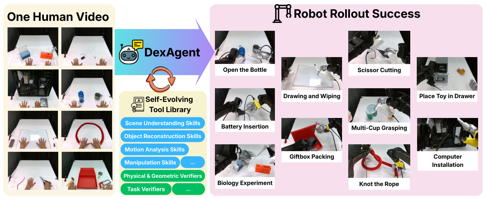
怎么读这张图
- 左 "One Human Video"：每个任务只有一段输入视频；第 2 行右边（蓝瓶、灰杯）就是开瓶例子。
- 中间 "DexAgent" 箭头和下方的循环箭头：agent 和工具库来回：取工具用，再把新工具存回去。
- 中下 "Self-Evolving Tool Library"：蓝色是 skill（Scene Understanding、Object Reconstruction、Motion Analysis、Manipulation），绿色是 verifier（Physical & Geometric、Task）。
- 右 "Robot Rollout Success"：真机双手在 10 个任务上的成功画面；左上 "Open the Bottle" 是例子的终点。
flowchart TD IN["Input
开瓶视频 + prompt"] --> SK["每个 stage：选或写 skill
human_pose_prior"] LIB["Tool library
skill + verifier"] <-->|"取用 / 存回"| SK SK --> V["Verifier 在 sim 里验
stress_test_rotation"] V -->|"没过：改或换工具"| SK V -->|"4 个 stage 都过"| OUT["Output
500 条 episode
π0.5 真机 70%"]:::win
Level 2 · Stages
4 个 stage，外加一个贯穿全程的 tool library
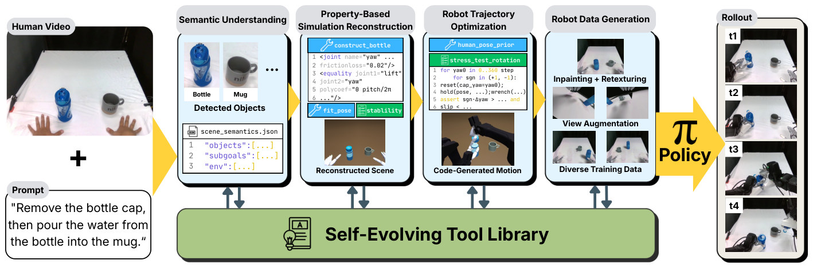
怎么读这张图
- 最左 "Human Video" + "Prompt"：例子的全部输入。
- "Semantic Understanding"（Stage 1）：检测到 Bottle、Mug，输出 scene_semantics.json（"objects"、"subgoals"、"env"）。
- "Property-Based Simulation Reconstruction"（Stage 2）：skill（蓝，扳手）和 verifier（绿，清单）建出螺纹盖瓶子。
- "Robot Trajectory Optimization"（Stage 3）：手型 skill + 旋转压测 verifier，下面是 sim 里机器手拧盖。
- "Robot Data Generation"（Stage 4）：Inpainting + Retexturing、View Augmentation、Diverse Training Data。
- "π Policy" → "Rollout" t1–t4：用这些数据训出的 policy 在真机上开瓶。
- 底部 "Self-Evolving Tool Library"：每个 stage 下的上下箭头：从库里取工具，新工具存回去。
flowchart LR S1["1 · Understand
bottle: articulated"] --> S2["2 · Reconstruct
螺纹盖 bottle"] S2 --> S3["3 · Trajectory
验证过的开瓶动作"] S3 --> S4["4 · Data
500 条 → π0.5"] click S1 href "#stage-1" click S2 href "#stage-2" click S3 href "#stage-3" click S4 href "#stage-4"
点击 stage 展开 Level 3 细节。每个 stage 都从 tool library 和 verify 循环里取工具、存工具。
Level 3 · Details
每个 stage 的细节
Stage 1 Semantic understanding 视频 + prompt → scene_semantics.json
- Why：后面要知道每个物体该建出哪些 property、每个 subgoal 怎样算完成。
- How：VLM 先从 prompt 列出任务可能涉及的物体。
- How：猜每个物体的 property，再抽视频帧看物体怎么动来确认。
- How：可调 skill 帮忙确认：depth estimation、gravity direction、human pose。
- How：把示范拆成 subgoal，每个只含一个（或尽量少的）动作，标出 acting hand 和 goal。
- 注意：这一步全是自然语言，没有参数和数值；数值到 Stage 2–3 才定。
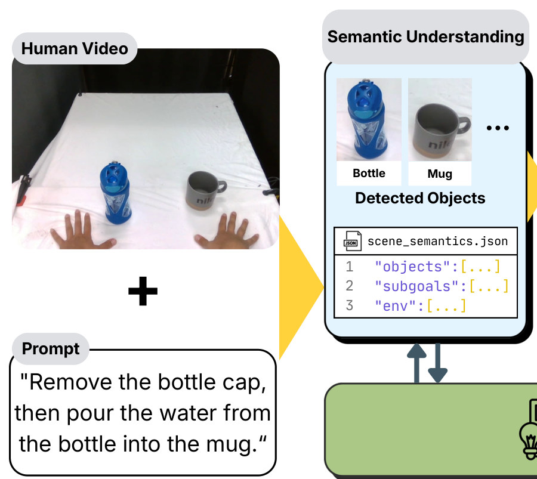
怎么读这张图
- "Human Video"：一帧第一视角画面：左边蓝瓶、右边灰杯，下方是示范者的两只手。
- "Prompt"：agent 拿到的唯一一段文字。
- "Detected Objects"：Bottle、Mug 两个裁剪；"…" 表示可能还有别的物体。
- "scene_semantics.json"：三个 key："objects"、"subgoals"、"env"，就是 Stage 1 的全部输出。
flowchart LR a["Prompt → 物体
bottle, mug"] --> b["在帧上确认 property
盖子先转再脱离"] b --> c["拆 subgoal
拧松 → 拔盖 → … → 倾倒"] c --> d["写 JSON
scene_semantics.json"]:::win
Running example 在这一步
作者给出的这个任务的 JSON（App. B2，作者用 "…" 省略了部分字段）：
- bottle："articulated"，parts：body、mouth、screw_cap、attached_tube。
- property："The cap turns relative to the body before detaching from the threaded mouth."
- property：盖子带着一根长管，挪开盖子前长管必须先离开瓶口。
- mug："rigid"，一直放在桌上，两只手都不碰它。
- subgoal（both）："Loosen the cap with repeated turns."：左手抵住瓶身不让它转，右手拧盖、需要时换握。
- subgoal（both）："Lift off the cap assembly."，goal：盖子脱离、长管离开瓶口。
- subgoal（left）：把瓶子倾斜成倒水姿势；JSON 注明液体流动 "not clearly resolved"。
Stage 2 Property-based simulation reconstruction JSON + 视频 → 验证过的 asset，摆进 sim 场景
- Why：对应 B 类的坏点：螺纹盖、抽屉、绳子要不同的模型，一套固定 recipe 建不出它们的机械结构。
- How：先按物体类型和 Stage 1 的 property 选或写 verifier，再动手建。
- How：库里有这类物体的 skill → 带参数调用（尺寸、颜色、纹理、joint 数、joint 活动范围）。
- How：没有 → 写一个参数化 skill，面向一组相似物体，而不是单个物体。
- How：从没有 joint 的 URDF 开始；每个 property 先写 verifier，再改 URDF 直到它通过。
- How：所有 verifier 一起跑查冲突；第二轮再加 verifier，并生成 3 个变体也要通过，才存进库。
- How：摆放：让 sim 渲染的物体 mask 和视频里的 mask IoU 最大（同一相机视角）。
- How：相机距离主要靠 depth，角度靠 Sharpa 手和人手的叠合；输出 scene file。
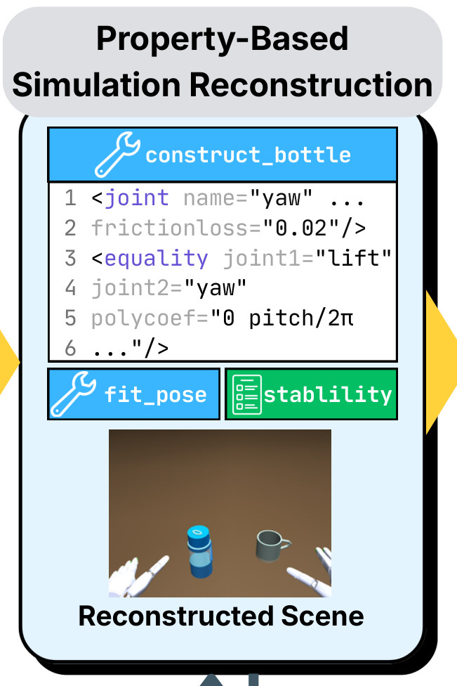
怎么读这张图
- 颜色：蓝底扳手 = skill，绿底清单 = verifier，和 Fig. 1 一致。
- "construct_bottle" 第 1–2 行：名为 "yaw" 的 joint，frictionloss "0.02"：盖子的转动。
- 第 3–5 行：equality 把 joint1 "lift" 绑到 joint2 "yaw"，polycoef "0 pitch/2π"。
- 含义（按 MuJoCo equality 的语义解读）：lift = pitch/2π × yaw，盖子转一圈沿轴升一个螺距：螺纹。
- "fit_pose"（skill）和 "stablility"（verifier，图中原拼写）：摆放和它的检查。
- "Reconstructed Scene"：sim 里的蓝瓶、灰杯和两只机器手。
flowchart TD V["先定 verifier
joint、axis、
travel、self-lock"] --> Q["库里有这类 skill？"] Q -->|"有"| C["带参数调用
尺寸、颜色、joint 范围"] Q -->|"没有"| W["逐个 property 写
construct_bottle
yaw + lift"] W --> R["全部 verifier + 3 个变体
过了才存进库"] C --> F["按 mask IoU 摆放
瓶、杯对齐视频"] R --> F F --> SC["Scene file
机器人 + 瓶 + 杯 + 相机"]:::win
Running example 在这一步
- bottle 是 "articulated" → joint-existence、axis、travel-range、self-locking 四类 verifier。
- mug 是 "rigid" → silhouette、scale、mass、resting-stability。
- construct_bottle 把盖子建成转动 joint，lift 跟着转动走：螺纹。
- 存进库前：所有 verifier 一起过，再生成 3 个瓶子变体也要过。
- 瓶、杯按 mask IoU 摆到视频里的位置；Fig. 5 第 2 列就是这个场景。
- 读图提示：正文说编辑 URDF，Fig. 2 的片段却是 MuJoCo 风格的 equality 写法。
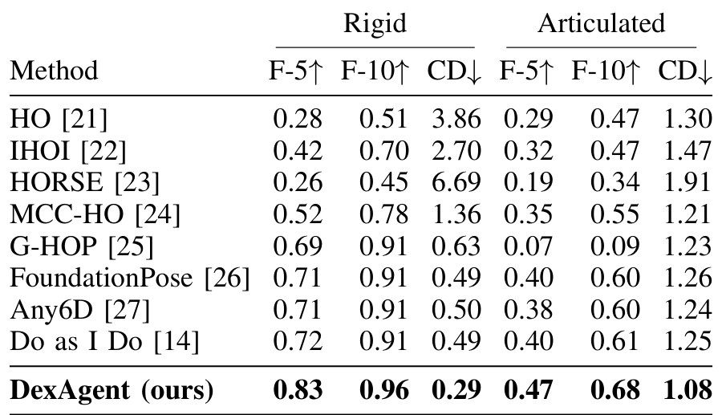
先看最后一行对 Do as I Do：rigid F-5 0.83 vs 0.72、CD 0.29 vs 0.49；articulated CD 1.08，最强 baseline 是 MCC-HO 1.21。
Stage 3 Robot trajectory optimization scene + subgoals → 一条验证过的双手 episode
- Why：对应 A 类的坏点：机器手复现不了人手动作时要改握法，有的 subgoal 要专门写动作。
- How：每个 subgoal 先定成功条件：搬运 = 到目标位置；操作铰接物体 = 到目标 joint 状态。
- How：选 skill 定目标手型：直接 retarget 人手、优化手指复现接触，或按 contact、force closure、clearance 生成 grasp。
- How：verifier 压测手型：搬运就抬起再摇；铰接物体就滑动、旋转，确认 joint 每个位置都能到。
- How：没过 → 按反馈改手型或换工具；只有通过的手型才往下用。
- How：IK 算手臂姿态；生成代码把关键姿态连起来，可用人手轨迹作 motion prior。
- How：串起所有 subgoal；前面的动作挡住后面的 subgoal 时，回头改前面。
- How：whole-trajectory verifier 查运动极限和物理一致性。
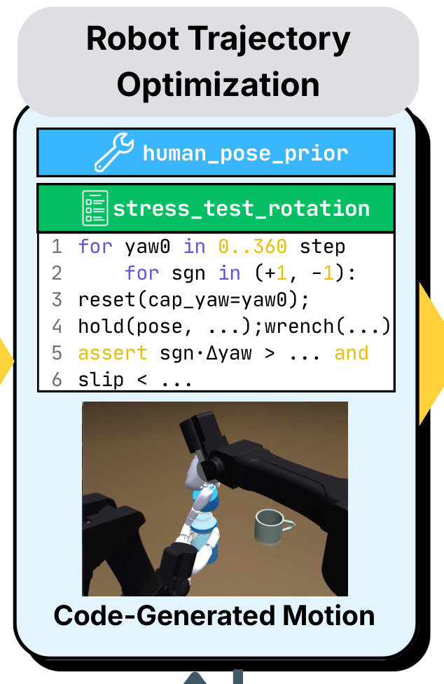
怎么读这张图
- "human_pose_prior"（蓝，skill）：参照示范者的手型给出机器手握法。
- "stress_test_rotation"（绿，verifier）第 1–2 行：起始角 "0..360" 逐步取，两个方向 "(+1, -1)" 都试。
- 第 3–4 行：把盖子 reset 到该角度，保持候选手型，施加 wrench。
- 第 5–6 行：盖子按指令方向转（"sgn·Δyaw > …"）且 "slip < …" 才算过。
- "Code-Generated Motion"：一只机器手捏住瓶盖，另一只握住瓶身。
flowchart TD G["subgoal 的成功条件
盖子 joint 到目标状态"] --> H["目标手型
human_pose_prior"] H --> T["手型压测
stress_test_rotation"] T -->|"没过：改或换工具"| H T -->|"过"| K["IK + 代码连接姿态
拧盖动作"] K --> J["串 subgoal，整段审查
拧松 → 拔盖 → 倾倒"] J --> EP["一条验证过的 episode
sim 里开瓶"]:::win
Running example 在这一步
- 拧松是铰接操作，成功条件是盖子 joint 到目标状态；JSON 的 goal："Cap is loosened sufficiently for removal."，阈值没报告。
- human_pose_prior 参照示范者的手给出拧盖握法。
- stress_test_rotation：盖子从 0–360° 每个起始角、正反两个方向都转一遍，不打滑才算过。
- 没过就改握法或换工具；开瓶试了几次没报告。
- 过了 → IK → 生成拧盖代码，再接拔盖和倾倒。
- 整段 episode 过了 whole-trajectory verifier 才交给 Stage 4。
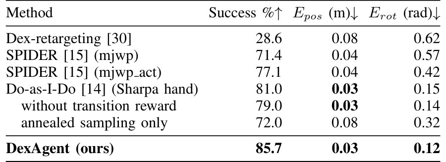
先看 Success：85.7 vs Do-as-I-Do 81.0，Erot 0.12 vs 0.15；缩进的两行是对 Do-as-I-Do 的 ablation。
Stage 4 Robot data generation 一条验证过的 episode → 500 条训练 episode
- Why：一条示范训不出 policy；sim 渲染的画面又和真实相机不一样。
- How：在桌面可用范围内随机采 1,500 个物体初始摆放（seed，App. A）。
- How：丢掉对应的手够不到、或找不到可行执行的 seed。
- How：每个 seed 调整 trajectory，过和原 episode 一样的手型检查和整段检查。
- How：从通过的 seed 里随机选 500 条；不够 500 就再采。
- How：用 VOID 从原视频抹掉示范者的手和物体；从标定相机渲染机器人和物体并合成进去。
- How：在 Blender 里 retexture；再渲染左、右手腕视角：每条 episode 三个同步视角。
- 然后：用这 500 条 fine-tune π0.5；真机测 10 次，初始摆放随机。
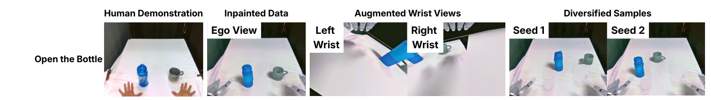
怎么读这张图
- "Human Demonstration"：原视频帧，有人的手。
- "Inpainted Data" / "Ego View"：人被抹掉，左下、右下是渲染进去的机器手。
- "Augmented Wrist Views"："Left Wrist"、"Right Wrist" 两个手腕相机都近看到蓝瓶，右手腕画面里还能看到杯子。
- "Diversified Samples" / "Seed 1"、"Seed 2"：同一任务，瓶和杯换了位置：500 条里的两条。
flowchart TD SD["采 1,500 个摆放
瓶、杯换位置"] --> FE["够得到 + 重新验证
同 Stage 3 的检查"] FE -->|"不过"| DR["丢掉"] FE -->|"过"| KP["留 500 条
不够再采"] KP --> RN["抹人、渲染机器人
VOID + Blender，3 个视角"] RN --> PI["Fine-tune π0.5
真机开瓶 70%"]:::win
Running example 在这一步
- 那一条验证过的开瓶 episode 变成 500 条，瓶和杯在新位置。
- 每条保持同样的双手计划，并针对新摆放重新检查。
- π0.5 用它们训练，真机 10 次开瓶成功 7 次（70%）；所有 baseline 0%（Table IV）。
All stages Self-evolving tool library 和 verify 循环 每个 stage ⇄ 库；新工具留给下一段视频
- Why：对应 C 类的坏点：每一步都有 verifier 把关；工具留下来，后面的视频更快。
- How：skill 产出 asset、pose 或 motion；verifier 根据 sim 里的交互接受或拒绝 skill 的产出。
- How：两者都是带类型参数的普通 Python 函数，设计成跨样本复用，不贴合某一个样本。
- How：改进工具时 fork 一份，不覆盖原函数；所有工具都存，object asset 因体积大小不一可选存。
- How：每个 stage 循环到所需 verifier 全过，或用完 budget / 100 个 agent turn。
- How：用完还没过 → 记为失败，不把半成品往下传。
- Backbone："any VLM" 都行，可经 API 切换；实验用的是哪个模型没写。
flowchart TD T["选或写工具
construct_bottle"] --> R["运行
得到 bottle asset"] R --> V["所需 verifier 全过？
joint、axis、travel"] V -->|"没过，还有 budget"| T V -->|"budget 用完"| FL["记为失败
不往下传"]:::gap V -->|"过"| KEEP["进下一 stage，工具入库
下一个瓶子直接调用"]:::win
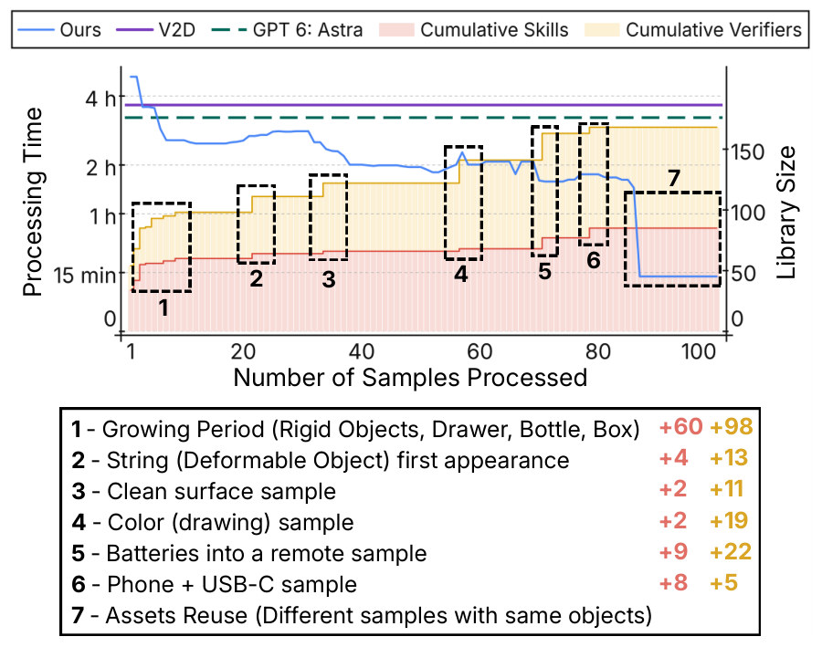
怎么读这张图
- 蓝线 "Ours"，左轴 "Processing Time"：每段视频的处理时间；第一段 4.3 h。
- 紫线 "V2D"、绿虚线 "GPT 6: Astra"：水平，因为两者都不保留工具库。
- 红 "Cumulative Skills"、黄 "Cumulative Verifiers"，右轴 "Library Size"：遇到新物体类型就台阶式上升。
- 虚线框 1–6 和下方图例：红数字是新增 skill，黄数字是新增 verifier。
- 框 1 "Growing Period (Rigid Objects, Drawer, Bottle, Box)"：+60 skill、+98 verifier；瓶子在这一段就出现了。
- 框 7 "Assets Reuse"：重复出现的物体，故意排在最后；时间掉到每段 13.1 min。
- 核对：各框增量加起来正好 85 skill、168 verifier，第 78 个样本时达到。
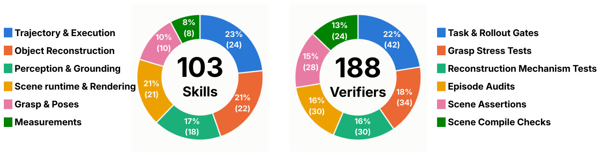
怎么读这张图
- 左 "103 Skills"：Trajectory & Execution 24、Object Reconstruction 22、Scene runtime & Rendering 21、Perception & Grounding 18、Grasp & Poses 10、Measurements 8。
- "Object Reconstruction"：建出机械结构，论文举的例子是 "screw caps, drawers, and writable surfaces"。
- 右 "188 Verifiers"：Task & Rollout Gates 42、Grasp Stress Tests 34、Reconstruction Mechanism Tests 30、Episode Audits 30、Scene Assertions 28、Scene Compile Checks 24。
- "Reconstruction Mechanism Tests"：检查 "threads, latches, and writable surfaces"；瓶盖螺纹属于这一类。
- 整体：verifier 比 skill 多，188 对 103。
Running example 在这一步
- construct_bottle、stress_test_rotation 作为带类型参数的 Python 函数存进库。
- …然后来了第二段开瓶视频：换一个螺纹瓶 → 带新参数直接调 construct_bottle。
- 还是同一个瓶子 → 连 asset 一起复用。
- EgoDex 实测：第一段 4.3 h → 复用 skill 2.2 h → 复用 asset 13.1 min（Fig. 4）。
- 复用 asset 后，每条验证过的 episode 比 V2D 快约 17×，比 GPT-6: Astra 快 15.1×。
- 这两个工具在开瓶这次是新写的还是库里已有：没报告。
Recap：例子覆盖了论文的哪些 idea
| 论文里的 idea | 例子里在哪体现 |
|---|---|
| 输入只有一段视频 + 一句 prompt | 开瓶视频 + "Remove the bottle cap, then pour…" |
| Stage 1：物体、类型、property，在帧上确认 | bottle → articulated（含 screw_cap、attached_tube）；mug → rigid |
| Stage 1：一个动作一个 subgoal，标出 acting hand | 拧松（both）→ 拔盖（both）→ … → 倾倒（left） |
| Stage 2：按物体类型选 verifier | bottle：joint-existence、axis、travel-range、self-locking |
| Stage 2：参数化 skill，逐 property 建，3 个变体 | construct_bottle：yaw joint，lift = pitch/2π × yaw |
| Stage 2：按视频对齐摆放 | 瓶、杯按 mask IoU 摆放；Fig. 2 的 fit_pose、stablility |
| Stage 3：成功条件和目标手型 | 拧松 = 盖子 joint 到目标状态；握法来自 human_pose_prior |
| Stage 3：手型压测，不过就重试 | stress_test_rotation：0–360° 起始角，正反两个方向 |
| Stage 3：代码生成动作，串联后整段审查 | 一只手抵住瓶身、另一只拧盖；整段 episode 再检查 |
| Budget：要么过，要么记为失败 | 每个 stage 上限是 budget 或 100 个 agent turn（开瓶用了多少没报告） |
| Stage 4：摆放增广 | 1,500 个 seed → 选 500 条通过的瓶 + 杯摆放 |
| Stage 4：sim-to-real 画面处理、额外视角 | VOID 抹人、合成机器人、Blender retexture、左右手腕视角 |
| Policy 和主结果 | π0.5 用 500 条 fine-tune：开瓶 70%，baseline 全 0%（Table IV） |
| Open-loop 重放检查 | 开瓶只有 DexAgent 的 trajectory 能在真机重放（Table III） |
| Self-evolving library | …第二段开瓶视频来了：工具直接复用（EgoDex：4.3 h → 2.2 h → 13.1 min） |
Results
结果一览
- 63.6% 11 个任务真机 policy 平均成功率；SPIDER 18.2%、V2D 17.3%、GPT-6: Astra 16.4%（Table IV）。
- 70% vs 0% 开瓶，对所有 baseline（Table IV）。
- 50% vs 0% 打绳结；80% vs 50% 抽屉，最好的 baseline 是 GPT-6: Astra（Table IV）。
- 11/11 个任务能 open-loop 重放；SPIDER 6/11，V2D、GPT-6: Astra 5/11（Table III）。
- 0.83 HOI4D rigid F-5，Do as I Do 0.72；Chamfer 0.29 vs 0.49（Table I）。
- 85.7% OakInk retargeting 成功率，Do-as-I-Do 81.0%；Erot 0.12 vs 0.15 rad（Table II）。
- 2.1 h 每段新视频，GPT-6: Astra 3.3 h、V2D 3.7 h；物体 asset 复用后 13.1 min（Fig. 4）。
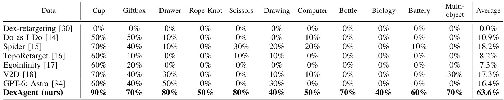
先看 Bottle 列：70% 对一整列 0%，再看 Average。
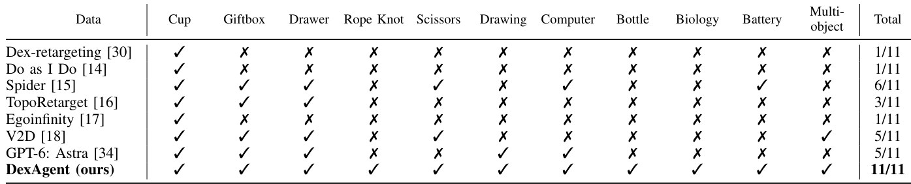
先看 Total，再看 Rope Knot、Bottle、Biology 三列：只有 DexAgent 有 ✓。
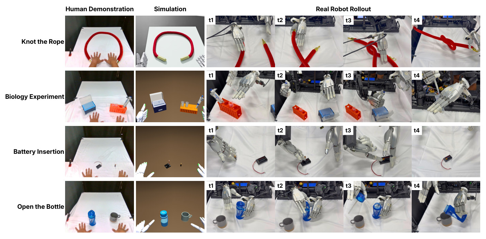
怎么读这张图
- 最下一行 "Open the Bottle"：就是例子；"Simulation" 列是 Stage 2 重建的场景。
- "Real Robot Rollout" t1–t4：一只手握住瓶身，另一只去拧盖；t3 拔出盖子和细长管；t4 把瓶子倾向杯子。
- 镜头：这几帧从机器人对面拍，所以杯子在画面左边，和第一视角左右相反。
- 其他行：绳子（deformable，50% vs 0%）、生物实验移液（40% vs 0%）、电池插入（60% vs 最多 10%）。
Limits
局限和开放问题
- 作者自述：semantic、geometric 错误，verification 不完整，sim-to-real gap 仍在（§VI）。
- 作者自述：没被发现的错误会经由工具库传下去；力敏感的接触即使过了 sim 检查也可能失败。
- 没有对 DexAgent 自身部件做 ablation（verifier、工具库、代码 vs 优化）；所有提升都是端到端的。
- Agent 用的 VLM 没写；每个 stage 的 budget 除 "100 agent turns" 外没给。
- Baseline 缺的 stage 由 "common implementation" 补上，补的是什么没写，例如 A 类拿到的瓶子 asset。
- 重放 "10 次中 1 次成功" 就算过；policy 每个任务只测 10 次。
- 有的 baseline 重放失败却有 policy 成功率（Do as I Do：Giftbox ✗ 但 50%），论文没讨论。
- 开瓶的"倒水"只是姿势：视频里看不清液体，sim 里液体怎么处理没说。
- 作者的下一步：加强 verification；现有 skill 解不出时用 RL 兜底。
For Agent-centric real-to-sim
对我们有什么用
- 先写 verifier 再建 asset：每个 property 先有检查，再改 asset 直到通过；可直接套到
real2sim-anything-indoor的铰接家具上，摆放再用 mask IoU 对齐原视频帧。 - 按物体类型的 verifier 菜单 + 参数化 builder：rigid / articulated / deformable 三套检查和"3 个变体也要过"，可给 WorldClaw 的 scene、motion verify 当种子；他们用 MuJoCo / Isaac Sim，换到 Genesis 要重新验证。
- 对 Robotic-harness：没有 harness 的 GPT-6: Astra（zero-shot）16.4%，DexAgent 63.6%；但 DexAgent 自己的 VLM 没写，模型和 harness 的贡献分不开。